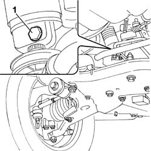
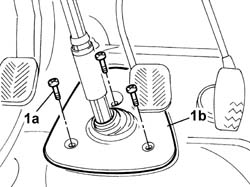
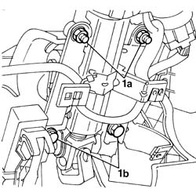

4110A31 MOUNT WITH STEERING CONTROL SHAFTS - RR - INCLUDES RR STEERING WHEEL FOR VERSIONS WITH AIR BAG
- Path
- Procedures > 41 STEERING UNIT > 4110 STEERING CONTROL AND LINKAGE > 4110A STEERING CONTROL > 4110A31 MOUNT WITH STEERING CONTROL SHAFTS - RR - INCLUDES RR STEERING WHEEL FOR VERSIONS WITH AIR BAG
- Kind
- repair procedure (removal / refitting; the operation number is the code)
- Applies to
- all engines; all production periods
- Interactive page
- https://sloeber94.github.io/elrnDB-fDct/en/#/244001163
Applies to: all engines; all production periods
 Removing
Removing
 Refitting
Refitting- Disconnect the negative battery terminal.
Op. 5580C18 AIR BAG MODULE - R+R
Op. 4110A10 STEERING WHEEL - R+R FOR REPLACEMENT OR CHECKS
Op. 7040A26 STEERING COLUMN TRIM - R+R
Op. 5550A12 COMPLETE STALK UNIT - R+R FOR VERSIONS WITH AIR BAG
Op. 5520A12 IGNITION SWITCH ASSEMBLY - R R FOR VERSIONS WITH AIR BAG
Op. 7040A20 LEFT DASHBOARD LOWER TRIM - R.R.
Op. 4110A21 STEERING WHEEL ADJUSTMENT DEVICE - R.R.
- Raise the vehicle on the lift.
- Move the protective sleeve securing the steering shaft coupling to the steering box.
1. Undo the bolt fixing the steering shaft to the steering box.

Applies to: all engines; all production periods
- Lower the vehicle on the lift.
1. Undo the bolts (1a) fixing the cover (1b) for the compartment housing the coupling steering the steering column to the steering box pinion.

Applies to: all engines; all production periods
1. Undo the nuts (1a) and bolts (1b) fixing the steering shaft support to the dashboard crossmember.
2. Remove the support and steering shafts.

Applies to: all engines; all production periods
Refitting
Removing- Position the support with the steering control shafts on the crossmember and the steering control shaft in the special housing in the floor panel.
- Fasten the support and steering control shafts to the dashboard supporting crossmember tighten the nuts and bolts to the recommended torque.
 | Value - daNm | Fastening | Component | Ø |
|---|---|---|---|---|
. | 1,5 | Nut | STEERING SHAFT MOUNTING | M8 |
| Value - daNm | Fastening | Component | Ø |
|---|---|---|---|---|
. | 1,5 | Bolt | STEERING SHAFT MOUNTING | M8 |
- Fasten the cover for the compartment housing the coupling joining the steering column to the steering box pinion to the passenger compartment floor, tightening the fixing bolts to the recommended torque.
| Value - daNm | Fastening | Component | Ø |
|---|---|---|---|---|
. | 1,8 | Bolt | STEERING SHAFT MOUNTING | M8 |
- Raise the vehicle on the lift.
- Fasten the steering control shaft to the steering box pinion, tighten the fixing bolt to the recommended torque.
| Value - daNm | Fastening | Component | Ø |
|---|---|---|---|---|
. | 2,5 | Bolt | FIXED ELEMENTS STEERING SHAFT STEERING | M8 |
- Position the protective sleeve for the steering control shaft-steering box pinion coupling on the coupling.
- Lower the vehicle on the lift.
Op. 4110A21 STEERING WHEEL ADJUSTMENT DEVICE - R.R.
Op. 7040A20 LEFT DASHBOARD LOWER TRIM - R.R.
Op. 5520A12 IGNITION SWITCH ASSEMBLY - R R FOR VERSIONS WITH AIR BAG
Op. 5550A12 COMPLETE STALK UNIT - R+R FOR VERSIONS WITH AIR BAG
Op. 7040A26 STEERING COLUMN TRIM - R+R
Op. 4110A10 STEERING WHEEL - R+R FOR REPLACEMENT OR CHECKS
Op. 5580C18 AIR BAG MODULE - R+R
- Connect the negative battery terminal.
Topics linked from this page (7)
- 4110A10 STEERING WHEEL - R+R FOR REPLACEMENT OR CHECKS
- 4110A21 STEERING WHEEL ADJUSTMENT DEVICE - R.R.
- 5520A12 IGNITION SWITCH ASSEMBLY - R R FOR VERSIONS WITH AIR BAG
- 5550A12 COMPLETE STALK UNIT - R+R FOR VERSIONS WITH AIR BAG
- 5580C18 AIR BAG MODULE - R+R
- 7040A20 LEFT DASHBOARD LOWER TRIM - R.R.
- 7040A26 STEERING COLUMN TRIM - R+R